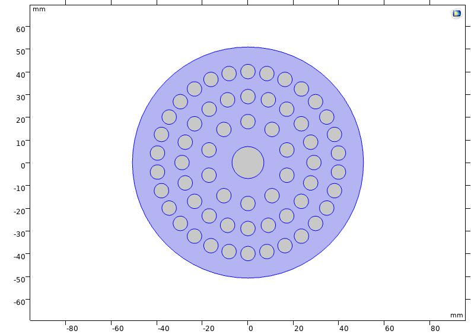
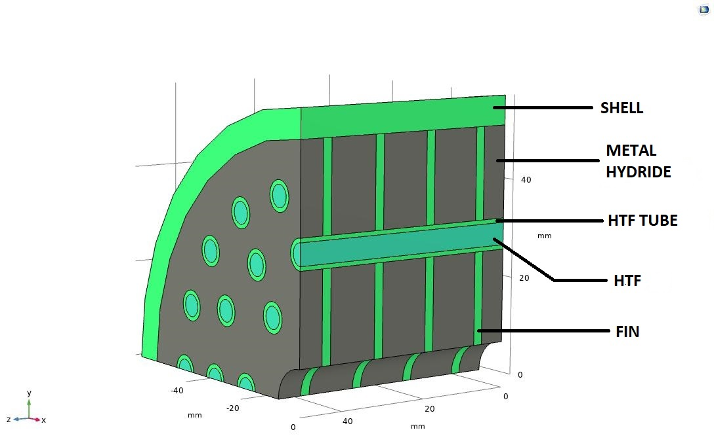
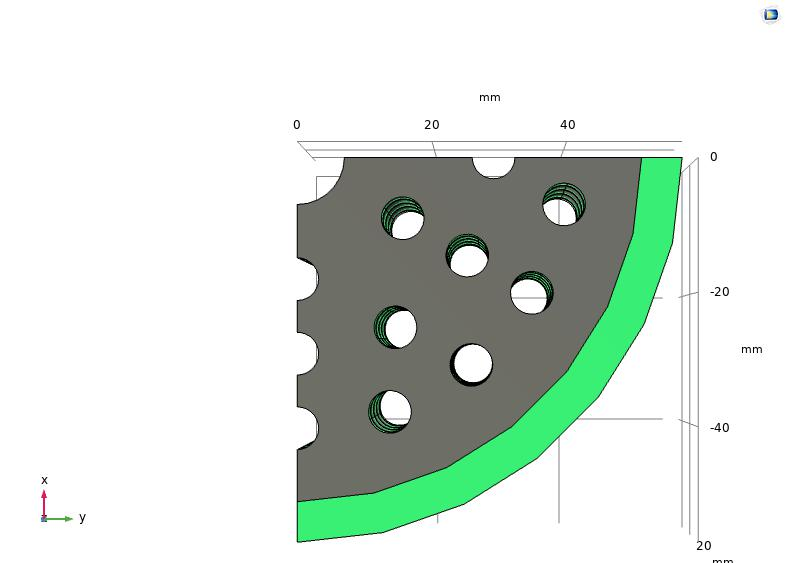
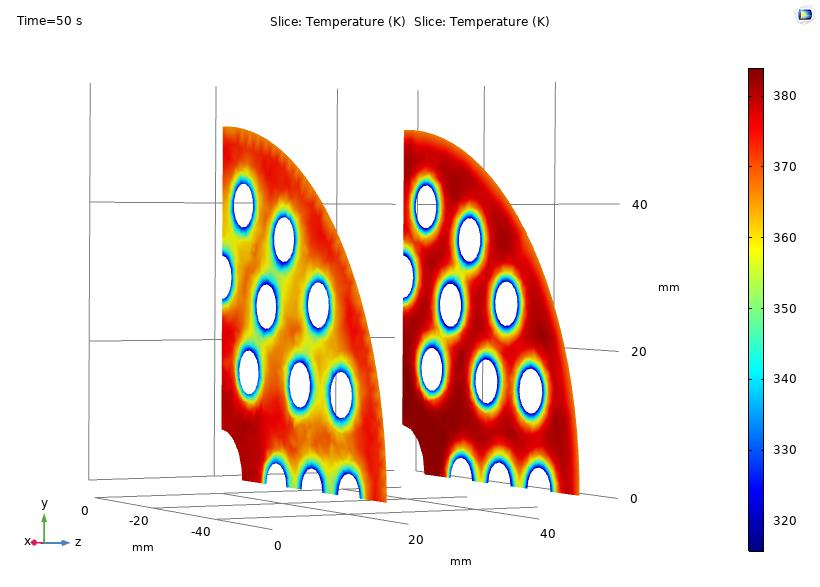
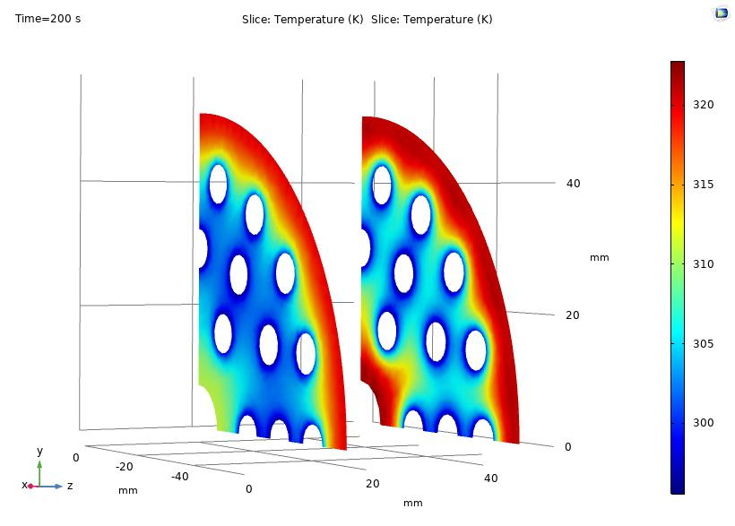
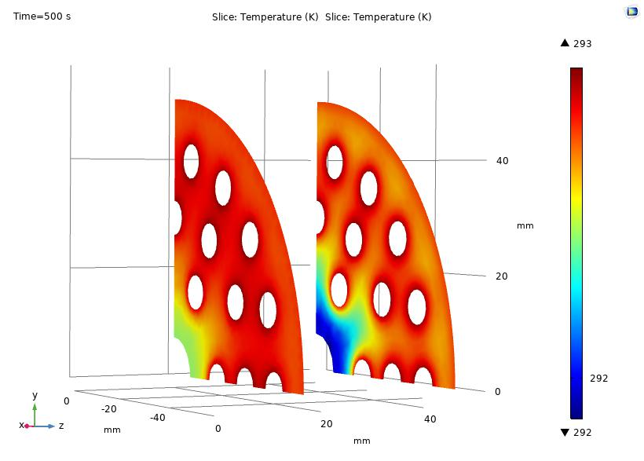

LmNi4.91Sn0.15 absorbs hydrogen exothermically at 30.8 kJ/mol H2, but the
packed bed conducts heat at only ~1.26 W/m·K, roughly 300× worse than the copper sitting next to it.
That makes charging a heat-rejection problem, not a kinetics problem: the bed self-heats,
the Van't Hoff equilibrium pressure climbs toward the 30 bar supply pressure, the driving potential
ln(P/Peq) collapses, and absorption stalls long before the alloy is full.
I built a transient model coupling the energy equation, Darcy flow through the porous bed, and Arrhenius
absorption kinetics, screening tube layout on a cheap 2-D 60-tube cross-section, then carrying the
3-D 36-tube quarter-symmetry model through the fin trade study. The design question was never
"how fast can it charge." It was how much parasitic copper mass am I willing to carry per second
of charge time saved, on a device whose entire reason for existing is gravimetric storage density.
COMSOL Multiphysics
Conjugate Heat Transfer
Porous Media / Darcy Flow
Reaction Kinetics
Fin & Heat Exchanger Design
Parametric Trade Study
88 s
to 90% state of charge, down from 147 s on the 4-fin baseline (−40%)
−38%
copper mass vs. the fin array of equivalent charge time
16.8 kW
peak heat rejection load on a 2.25 kg charge (7.5 kW per kg of alloy)
1.1%
change in charge time across a 20× sweep of shell-side h
Model Setup
Two-stage approach: a cheap 2-D cross-section to screen tube layout, then a 3-D quarter-symmetry model carrying the fins, shell and heat transfer fluid for the trade study.
Solver & Discretisation
COMSOL Multiphysics 5.6, fully transient. Free tetrahedral mesh, refined at tube walls and fin roots where the thermal gradient concentrates.
Physics Coupling
Energy equation (conduction + convection) ↔ Darcy's law momentum transport in porous media ↔ H2 mass diffusion, closed by a user-defined absorption source term.
Geometry
Ø102.26 mm bore × 50 mm, Ø114.3 mm shell OD. 36 embedded cooling tubes (Ø6.35 / Ø4.57 mm) on three pitch circles at r = 18.08 / 29.15 / 40.23 mm, Ø14 mm central sintered H2 filter.
Bed Material
LmNi4.91Sn0.15: M = 0.432 kg/mol, ρcryst = 8300 kg/m³, porosity ε = 0.5, saturation capacity 1.4 wt%.
Kinetics & Thermodynamics
Ca = 59.187 s−1, Ea = 21 179.6 J/mol. ΔH = 30 800 J/mol H2, ΔS = 108 J/mol·K, plateau slope factor 0.038, hysteresis factor 0.137.
Thermal Conductivities
Bed effective k ≈ 1.26 W/m·K (solid 2.4, H2 0.127, ε = 0.5) against copper fins at ~400 W/m·K, a 300× contrast and the entire reason the fins exist.
Operating Point
30 bar H2 supply, bed initially at 293 K, HTF water entering the tubes at 293 K / 0.1 m/s.
Design Space Swept
Fin count 4–10, fin thickness 1–3 mm, shell-side convection coefficient 100–2000 W/m²·K. 13 transient runs carried to 1000–2000 s.
ρ cp ∂T/∂t + ρg cp,g u·∇T = ∇·(keff ∇T) + Q̇energy: bed and gas, conduction + convection
Q̇ = (ΔH / MH₂) · ṁabsvolumetric heat source from hydriding
ṁabs = Ca · exp(−Ea / RuT) · ln(P / Peq) · (ρsat − ρ) · (1 − ε)Arrhenius absorption rate
ln Peq = −ΔH/(RuT) + ΔS/Ru + (φs + φo)·tan[π(X/Xf − ½)] ± ½·HysVan't Hoff with plateau slope and hysteresis
u = −(K / μ) ∇PDarcy momentum transport through the porous bed

2-D screening model, 60 ECT on 4 pitch circles

3-D quarter model: shell, MH bed, HTF tube, fins

Annular Cu fin, 36 tube penetrations

Bed temperature, t = 50 s: hot core, cold tube halos

t = 200 s, reaction front receding toward the shell

t = 500 s, bed quenched back to HTF temperature
Fin Array Trade Study · Charge Time vs. Parasitic Copper Mass
Transient runs at 30 bar H2, HTF 293 K. t50 / t90 / t95 = time to reach that fraction of the 1.4 wt% saturation capacity.
| Fin Config | Peak Bed Temp | t50 | t90 | t95 | Cu Mass | Verdict |
|---|
| 4 × 2 mm | 368.8 K | 35 s | 147 s | 185 s | 496 g | Baseline |
| 6 × 2 mm | 365.7 K | 27 s | 109 s | 139 s | 744 g | – |
| 8 × 2 mm | 361.9 K | 22 s | 81 s | 111 s | 992 g | Fastest, but heavy |
| 10 × 2 mm | 354.6 K | 19 s | 67 s | 93 s | 1240 g | Mass-prohibitive |
| 8 × 1 mm | 368.2 K | 28 s | 109 s | 138 s | 496 g | – |
| 10 × 1 mm | 366.8 K | 25 s | 88 s | 117 s | 620 g | ◆ Selected |
| 6 × 3 mm | 359.9 K | 24 s | 79 s | 97 s | 1116 g | – |
| 8 × 3 mm | 346.6 K | 20 s | 70 s | 94 s | 1488 g | Worst g per s saved |
Charge fraction is the volume-averaged bed concentration from the COMSOL transient solutions.
Copper mass derived from the annular fin geometry (Ri = 51.13 mm, Ø14 mm filter bore,
36 × Ø6.35 mm tube penetrations, ρCu = 8960 kg/m³).
Shell-Side Convection Sensitivity · 10 × 1 mm Configuration
Sweeping the outer-shell heat transfer coefficient to decide whether a forced-convection jacket earns its place in the BOM.
| Shell h (W/m²·K) | Equivalent Regime | Peak Bed Temp | t90 | t95 |
|---|
| 100 | Natural convection | 366.8 K | 88 s | 118 s |
| 500 | Light forced air | 366.9 K | 88 s | 118 s |
| 1000 | Forced air | 366.9 K | 88 s | 118 s |
| 1500 | Liquid jacket | 367.0 K | 89 s | 119 s |
| 2000 | Aggressive liquid jacket | 367.0 K | 89 s | 119 s |
A 20× increase in shell-side h moves charge time by 1 s and peak bed temperature by 0.2 K.
The shell is not a load-bearing heat path, so an external jacket would spend pump or fan power for nothing.
What the Model Actually Decided
The conclusions that changed the hardware, not the ones that restate the physics.
01
The reactor is heat-rejection-limited, and the limit bites within three seconds.
Peak heat release is 7.5 kW per kg of alloy, 16.8 kW for a 2.25 kg charge and 485 kJ total,
dumped into a bed that conducts at 1.26 W/m·K. Every lever worth pulling was a conduction-path
lever; the gas side and the kinetics were never the constraint.
02
Fin count beats fin thickness per gram of copper spent.
10 × 1 mm reaches 90% charge in 88 s on 620 g of copper. 8 × 2 mm gets there in 81 s but needs
992 g. That is 8% slower for 38% less parasitic mass, and on a device sold on gravimetric
storage density, mass is the currency. 10 × 1 mm was selected.
03
Returns collapse past eight fins at fixed thickness.
Going 4 → 8 fins cut t90 from 147 s to 81 s (−45%). Going 8 → 10 bought only
14 more seconds for another 248 g of copper. The knee in that curve is the design point.
04
The shell is a dead heat path, so specify natural convection and delete the jacket.
Sweeping shell-side h over 100–2000 W/m²·K moved t90 by one second. The bed near
the shell sits at low H2 partial pressure, so it absorbs little and generates little heat;
there is nothing there for a jacket to remove. This removed an entire subsystem from the BOM.
05
Rejected the coldest design on purpose.
8 × 3 mm gives the lowest peak bed temperature in the study (346.6 K) and a respectable 70 s
t90, but costs 1.49 kg of copper, the worst mass-per-second-saved of any candidate.
Lowest peak temperature is not the objective function; charge time per unit parasitic mass is.